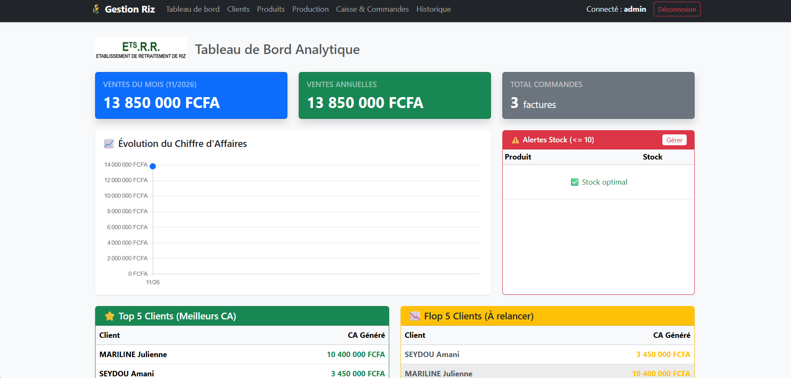
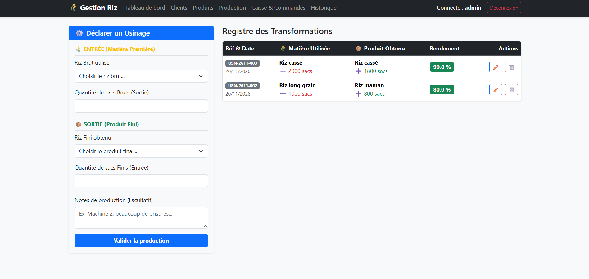
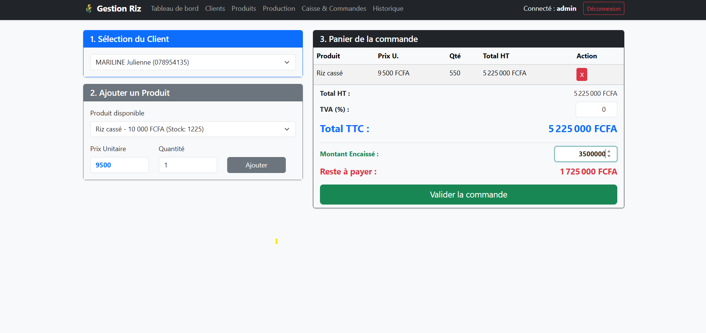
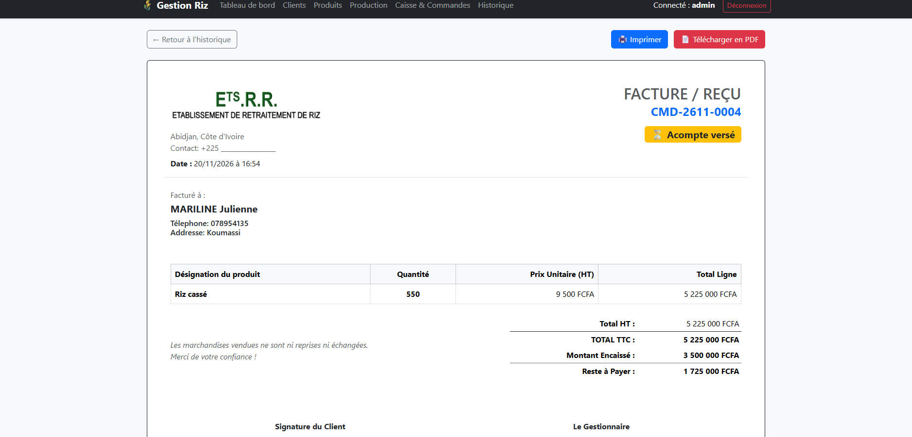

Application web full-stack de gestion intégrée conçue pour une unité de retraitement et de commercialisation de riz (Établissement de Retraitement de Riz — ETS R.R.). Elle digitalise l'ensemble de la chaîne de valeur : de l'approvisionnement en riz brut et le suivi des rendements d'usinage jusqu'à la vente en gros/détail avec gestion des acomptes et génération de factures PDF.
Cliquez sur une capture pour l'agrandir. L'interface couvre le pilotage global, la transformation industrielle, l'encaissement et l'édition de factures calibrées au format A4.

AgrandirVue synthétique des indicateurs clés de l'usine : niveaux de stocks brut et fini, suivi de l'activité commerciale et accès rapide aux modules métier.

AgrandirEnregistrement des lots de riz brut transformés en sacs finis avec calcul automatique du taux de rendement industriel et contrôles stricts de cohérence des stocks.

AgrandirVente B2B/B2C filtrée sur les stocks finis disponibles, ajustement négociable du prix unitaire avec historisation et calcul sécurisé des paiements partiels.

AgrandirÉdition de reçus prêts à imprimer ou exporter en PDF via html2pdf.js, intégrant les badges de statut (Payé, Acompte versé, Non Payé) et zones de signature.
Transformation matière première → produit fini avec calcul en temps réel du rendement industriel, double validation front/back et annulation atomique protégée si le lot fini est déjà vendu.
Exposition exclusive des produits à l'état FINI en stock, négociation du prix unitaire à la volée avec historisation sur facture et sécurisation des acomptes face au Total TTC.
Génération de reçus professionnels calibrés pour l'impression A4 et l'export PDF direct, avec statuts dynamiques de règlement, récapitulatif des versements et mentions légales.
Chaque entrée, vente, usinage ou annulation alimente un journal horodaté (MouvementStock) consignant le stock avant/après mouvement et l'utilisateur connecté.
L'application repose sur une architecture modulaire FastAPI + SQLAlchemy séparant le routage métier, la validation Pydantic, la logique de traçabilité et les vues serveur Jinja2.
auth, clients, produits, production, commandes).Pydantic pour le contrôle des entrées et sessions authentifiées via Starlette Sessions.services.py.Jinja2 réactifs stylisés avec Bootstrap 5 et export client html2pdf.js.DATABASE_URL dans database.py../data et des tables SQLite en l'absence d'URL distante.PostgreSQL (postgresql+psycopg2) pour l'hébergement cloud.Uvicorn.| Entité | Couche / Fichier | Responsabilité métier |
|---|---|---|
| Produit | app/models.py |
Distinction des états (BRUT / FINI), suivi des quantités disponibles et tarifs de référence. |
| Transformation | app/models.py |
Enregistrement des opérations d'usinage, calcul du taux de rendement et gestion des annulations atomiques. |
| Client & Commande | app/models.py |
Gestion du portefeuille B2B/B2C, prix unitaires historisés, suivi des acomptes et génération des factures A4. |
| MouvementStock | app/services.py |
Journal d'audit horodaté enregistrant le stock avant/après chaque opération et l'utilisateur responsable. |